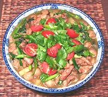

|
Chicken with SauceThailand - Khao Rat Na Kai | ||||
| Serves: Effort: Sched: DoAhead: |
4 main *** 55 min Prep |
Topped with a simple salad, this dish is structured to present an amazingly broad palette of complimentary flavors and textures. Chili heat is passed separately (Note-7) See Note-8 about method. | |||
|
1 4 1 ---- 6 2 4 3 4 6 ----- 1 1 1 1/2 ----- 1 2 2 ----- 3 3 1/4 ----- |
# oz T --- oz cl oz oz oz oz --- c T T t --- T T T --- oz oz c --- |
Chicken (1) Chicken Livers Soy Sauce ----------- Onion Garlic Asian Greens (2) Pineapple (3) Scallions Straw Mushroom (4) -- Sauce Stock Soy Sauce Fish Sauce (5) Sugar (6) ----------- Cornstarch Water Oil -- Topping Cherry Tomatoes Bell Pepper, grn Cilantro Leaves -- Serve with Chili Vinegar (7) Jasmine Rice |
Prep - (40 min)
|
I did change the order a bit to improve flow and flavor, and added some fish sauce (how could it be Thai without fish sauce?). The pattern recipe was intended to be served restaurant style Khao Rat Na (single potion spooned over a mound of rice) and had twice as much sauce, but I find my amount is plenty for normal table service (and their photo had even less).